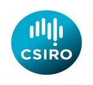

Webinar registration - 12th Pacific Science Association Inter-Congress
Webinar registration - 12th Pacific Science Association Inter-Congress
Event title: 12th Pacific Science Inter-congress
Where: Suva, Fiji
When: 10 & 11 JULY 2013
Special Session: Connecting Biodiversity Collections in the Pacific: Digitization through DNA Barcoding and Informatics
- Presentation: Collection digitization, chaired by Beth Mantle, CSIRO: Wednesday afternoon from 14:20 to 17:30 (Fiji time, GMT +12 hours)
- Presentation: DNA barcoding, chaired by David Schindel, CBOL, Smithsonian Institution: Thursday morning from 11:00-12:20 (Fiji time)
To make the event as accessible as possible, it will be webcast as a GoToWebinar. Registrants will see and hear all presentations and discussions and will be able to pose questions to the presenters.
Registration via link for webinar: http://connect.barcodeoflife.net/events/psa12
Program of events: Wednesday 10th of July & Thursday 11th of July
Event summary:
The Consortium for the Barcode of Life (CBOL) (http://www.barcoding.si.edu) at the Smithsonian Institution and CSIRO in Canberra, Australia (www.csiro.au), are the co-organizers of a full-day symposium/workshop at the 12th Pacific Science Association Inter-Congress, Suva, Fiji 8-12 July 2013 (http://www.psi2013.usp.ac.fj). The session is endorsed by the Oceania GBIF Node and the Global Taxonomy Initiative of the Convention on Biological Diversity. The description of the session is presented below. You will see that the day will be divided between presentations on barcoding as a tool for digitizing collections and a training workshop on other digitization techniques. Since both barcoding and collection digitization are community-based initiatives, the session will be an open, distributed Webinar. Registration which will be limited to 100 web-participants.
CONNECTING BIODIVERSITY COLLECTIONS IN THE PACIFIC: DIGITIZATION THROUGH DNA BARCODING AND INFORMATICS
- David E. Schindel, Consortium for the Barcode of Life, Smithsonian Institution, Washington, DC, USA
- Beth Mantle, Australian National Insect Collection, CSIRO, Canberra, ACT, Australia
Reference collections in museums, herbaria, botanical gardens, zoos and other repositories are critical infrastructure for research, education, regulation and legislation related to biodiversity. These collections provide documentation of research results as well as long-term changes in nature. Patterns of ecological, evolutionary and anthropogenic changes often go unseen and undocumented until samples from these collections material are analyzed and re-analyzed using the latest technology. In order to be accessible and effective, reference collections need to be digitized and their data and metadata made available to the research and education community, to policy-makers, and to the general public. Digitization in the most general sense is the association of an organism and its characteristics to a unique identifier that can be indexed for later searching and retrieval. It can take several forms, ranging from digital capture of label data (date and place of collection, taxonomic identification) to digital image capture and even DNA sequencing.
These two half day sessions will include a symposium of contributed presentations on DNA barcoding and digitisation, and a workshop on biodiversity informatics. The DNA barcoding symposium will contribute toward development of a regional strategy for Oceania for construction and use of standardized barcode libraries. These libraries could serve basic research in ecology and evolution and/or applications such as the protection of endangered species and control of invasive alien species such as agricultural pests. The biodiversity informatics workshop will showcase initiatives such as the Global Biodiversity Information Facility (GBIF), the Atlas of Living Australia (ALA), and digitization initiatives such as iDigBio and Australia’s Virtual Herbarium (AVH). This session will explore applications and network tools appropriate for the small and scattered countries and territories of Oceania. Participants will learn the latest approaches to the digitization of natural history collections and explore how these could be applied to their collections. The session will conclude with a round-table discussion on strategic development of, and support for, biodiversity informatics in the Oceania region.
The Secretariat of the Convention on Biological Diversity (CBD) has expressed its support for this proposed workshop as a contribution to enhancing capacity in taxonomy (a goal of CBD’s Global Taxonomy Initiative, GTI) and strengthening informatics infrastructure in the Pacific region. Academic collaborations on biodiversity facilitate achievement by CBD Parties in the region of Aichi Biodiversity Target 9 (invasive alien species) and Target 19 (Biodiversity science).
For more information - contact:
Dr Beth Mantle
Collection Management & Delivery Australian National Insect Collection | Australian National Wildlife Collection CSIRO Ecosystem Sciences
GBIF Australia Node Manager | GBIF Oceania Regional Representative |
P: +61 2 6246 4281 | M: +61 (0) 407 174 427 | F: +61 2 6246 4264
beth.mantle@csiro.au | www.csiro.au | www.csiro.au/places/anic | www.csiro.au/places/anwc
Address: GPO Box 1700 , Canberra ACT 2601